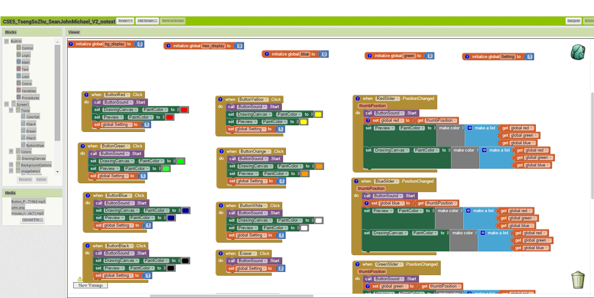
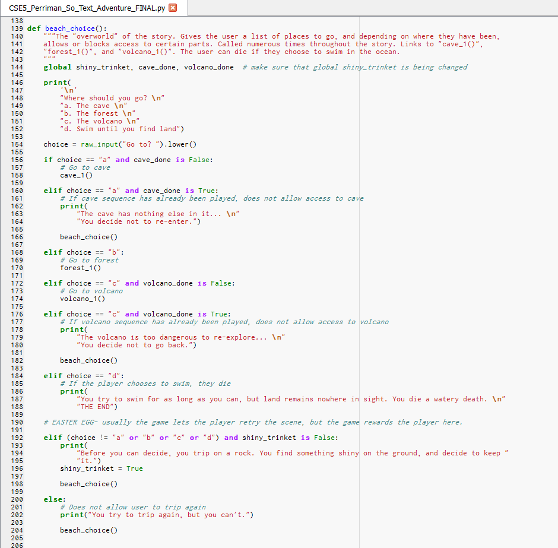
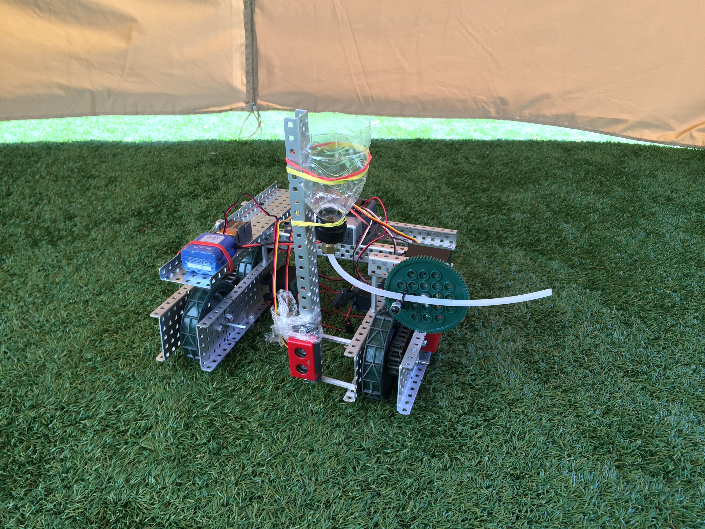
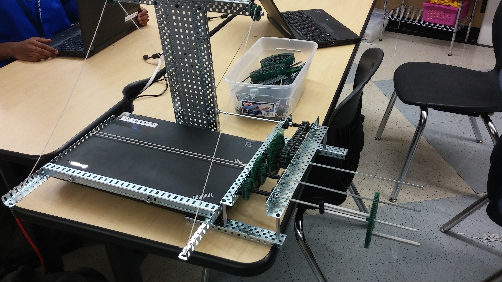
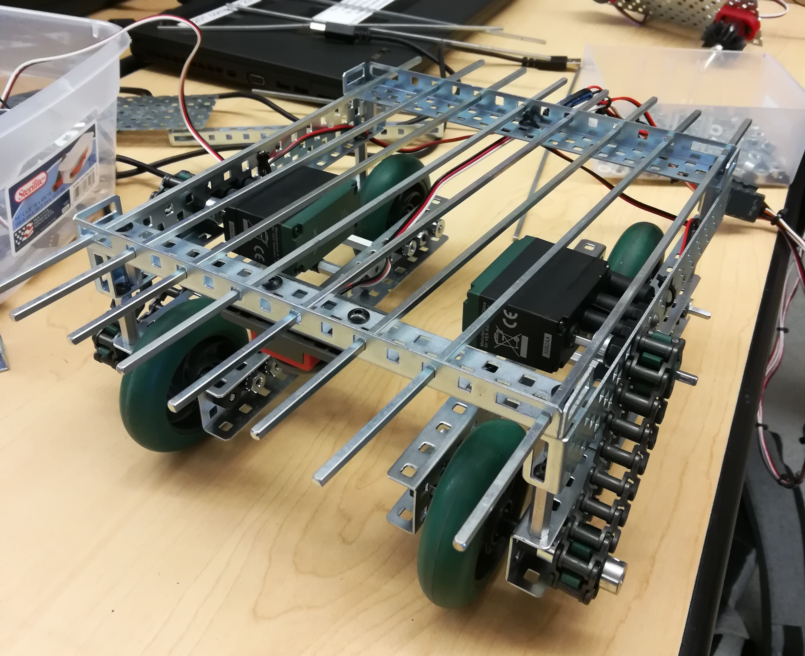
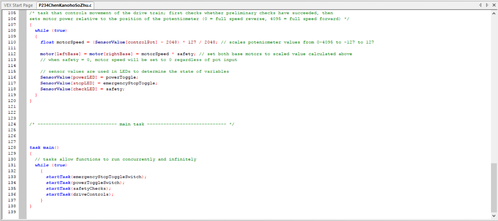

SCHOOL PROJECTS
Computer Science and Software Engineering (2015-2016)
-
PLTW Activity 1.2.4 App Inventor Project
- Computer Science and Software Engineering
- Development Cycle: 12/7/15 - 1/8/16
- Project Type: Group

The objective of the project was to develop a project in MIT App Inventor based off a given prompt. My group decided to develop a drawing style app that had basic functions and photo functionality. This project helped me explore MIT App Inventor's coding tools in more depth. The app we developed, titled "PaintPot" after the prompt, used simple algorithms and conditional statements which allow people to view our source code and improve on it. One of the main challenges that we faced when designing the app was learning that the camera on the tablet was infunctional with App Inventor. This was one of the main features that we had planned, and forced us to take the app in a completely different direction than we had initially planned. Some of the other challenges we faced were a lack of familiarity with MIT App Inventor, and a lot of glitches. For example, we discovered that when you drew lines, they were choppy. After a day of testing, we found that you can remedy this by drawing a combination of circles and lines. Among the features we planned, we were able to implement hex colors and brush sizes by having a user fine-tune them with sliders. After a beta version and a gallery walk, we cleaned up the app's UI, fixed algorithms, and added more background tools. The main thing we wanted our app design to emphasize was a simple UI that featured a plethora of different tools, and I feel that my group accomplished this.
My group was only successful in creating the app because of our team dynamic. Each of us were proficient programmers, so we were able to take turns programming and contributing to the project log. We split up the work and switched roles every day. For example, one day I might have written in the project log, and another day I might be coding. Because of this, our app features algorithms and design ideas from every member of our group. My main contributions to the app were the drawing and erasing algorithms and redesigning the UI after the beta walk.
-
PLTW Activity Python Text Adventure Project
- Computer Science and Software Engineering
- Development Cycle: 2/19/16 - 3/8/16
- Project Type: Group

The objective of this partner-based project was to develop a text-based python adventure using the Python IDE Canopy. After a brainstorm session, my group decided to create a story that followed a man's adventure on an island to find a way home. This project allowed me to practice and familiarize myself with Python's tools. The code we developed relied on functions calling other functions based on the user's inputs. It did not return any values, which caused the code to have miniscule lag at times. Several of our codes recursed on themselves in order to prevent glitches. One of the main challenges that we faced during development was actually storyboarding the plot, and making sure that the game was not too long or too short. In addition to this, we wanted to create a program that was not too easy to solve, but similarly, not too tedious. Our final project was a story that took some time to solve, but had multiple endings and clues for each decision. Some of the other challenges we faced were debugging our code and creating intuitive algorithms. Early in development, we created sloppy algorithms that were susceptible to glitching. For example, a user could easily break our code if they named each location a specific name. We fixed the bug by replacing our algorithm for deciding whether places were completed with one-way flags. This removed the bug. We were able to implement most of our ideas onto our code. The main thing we wanted our design to emphasize was readable codes with intuitive algorithms that were understandable and replicatable, and our code exemplified this.
My pair had a good team dynamic. Each of us were proficient programmers, so we were able to take turns programming and contributing to the project log. However, I was more familiar with Python, so I was able to teach my partner Python's tools and general algorithms. Because of this, we were both able to improve as programmers. Our app features algorithms and design ideas from both of us. My main contributions to the app were creating the main recursion algorithm and linking functions together.
-
DEDA Entrepreneurship Project 2015-2016
- Computer Science and Software Engineering, Introduction to Engineering Design
- Development Cycle: 5/13/16 - 5/31/16
- Project Type: Group

The final project of the year tasked groups to use their creativity and make a solution to a prevalent problem in our communities. After a brainstorm session, my group, consisting of Justin Lee, Isaiah Cruz, and I, decided to tackle the problem of California's water shortage. Our research concluded that the majority of solutions to irrigation problems were either inefficient (and wasteful), or incredibly expensive. Thus, we sought to create something that was efficient and inexpensive. Our solution was an autonomous precsion irrigation robot, which used sensors to sense different plants and water them accordingly. The robot was built on a 10 x 12 frame, and used a rear-wheel drive to move. It employed ultrasonic sensors to detect obstacles, and then rotated a gear to drip water onto plants. One of the main challenges that we faced during development was programming an autonomous robot that was precise in both movement and activiation. We spent several hours mainly debugging issues such as wrong sensor values, joystick buttons, and leaking issues.. Our final project was Irribot (pictured on the side), which had sensors to sense plants and obstacles in front of it. In the future, our group wants to make several important revisions so Irribot is more professional and commercially viable. We want to switch from cam-actuated drips to solenoid valves due to their efficiency and presicion in comparison. The most ambitious improvement was to integrate solar power for longer unmanned outdoor work hours. We also created a presentation and website to advertise our robot's features and design philosophy, which can be found below.
Our group was diverse in talent and experience. However, we were able to help each other accomplish the same goals. Justin and I were both active members of the DHS robotics club this year, so we were able to contribute our knowledge and build a working prototype. Isaiah and I were both enrolled in CSE, so we both developed the website. Justin was the only member in IED, so he was responsible for creating a CAD model of our prototype. I acted as a project manager, and created a design brief, a solution summary, and parts of the presentation. This group worked well together, and this is why our group was able to create a project that is strong in all areas.
Principles of Engineering (2016-2017)
-
PLTW Activity 1.1.6 Project Compound
- Principles of Engineering
- Development Cycle: 12/7/16 - 1/8/17
- Project Type: Group

The objective of the project was to develop a compound machine, consisting of 4 or more simple machines, that could complete an everyday task. There were several constraints on the project, such as a 2 week development cycle, 4 or more required simple machines, and being restricted to VEX or FisherTech parts only. Our group decided to create a device that could open a laptop computer and other similar apparati. The machine we developed, titled "COM: Computer Opening Machine", used a wheel and axle system, chain and sprocket, pulley, and gear train. Power was inputted using the crank system on the right side of the computer. The rotation was then transferred through a gear train with gear ratio 3.89. From there, power went through a chain and sprocket system with a .5 gear ratio, a wheel and axle system with an MA of .157, and finally through a pulley with an MA of 1. The overall MA was .305. Our final design did not differ much from our initial design; most changes were small, such as decreasing gear ratios or strengthening systems. One major change, however, was the attaching the gearbox to the base of the machine. This allowed for more stability, and made turning the crank easier.
My group possessed a good team dynamic, which allowed us to do well on the project. I was assigned as the project manager, as I had a lot of prototyping experience due to robotics. Accordingly, I ensured that everyone was on task, delegated tasks to members, and helped them out when they needed it. My main role was to build the gearbox, which included the gear train and sprocket system, and its crank. However, I also did documentation when necessary. In addition to this, we used my design sketch as a basis to build off of. We utilized a log of our progress and changes to the prototype, which were stored through documentation and images. The documentation can be found below.
-
PLTW Project 3.2.4 Machine Control
- Principles of Engineering
- Development Cycle: 04/19/17 - 05/05/17
- Project Type: Group


The objective of the project was to use VEX, FT, and other parts along with RobotC to solve a problem posed by a client. Our group, consisting of me, Alicia Chen, Chloe Kanoho, and Michael Zhu chose to solve problem 5, which tasked us to create a delivery vehicle which would carry items in a linear path. There were several constraints on the project, such as a 2 week development cycle, required use of a potentiometer to control the machine, and measures put in place to preserve safety, such as emergency stops. The machine we developed was designed with redundancy in safety measures in mind. It used a rear powered 4 wheel drive, with a controller (attached to the cortex) hard wired to the vehicle. There were 2 buttons on the vehicle and controller, which independently manipulated flags that dictated whether the drive would move. The potentiometer and one button was placed on the controller, while the other button was placed on the vehicle. The potentiometer was coded such that if it was near the middle (2048) the base motors would be set to 0, while if it was at the limits (0 or 4095), the base motors would be set to -127 or 127 respectively. The power scaled with the potentiometer input; for example, the motors would output more power if the potentiometer was set to a value of 4095, rather than a smaller value such as 3000. Our final design did not differ much from our initial design; most changes were small, such as adding another motor to the drive train to increase power and repositioning the cortex from the vehicle onto the controller for more space on the vehicle for objects.
My group possessed a good team dynamic, which allowed us to do well on the project. In this project, we made efficient use of delegation in order to accomplish our goals on time and efficiently. For example, Chloe and Michael were assigned to build, while Alicia took the lead on documentation. I was assigned as the project manager, so I was in charge of delegating tasks and managing the team's schedule. In addition to this, I took the lead on programming, as I had the most experience due to robotics and prior education. My main contribution was the robot program, which used tasks to concurrently run subsystems of the robot. However, I also did documentation when necessary. We utilized a log of our progress and changes to the prototype, which were stored through documentation and images. The documentation can be found below.